Fundamentals of Linear Control:
A
Concise Approach
Maurício C. de Oliveira
Chapter 7: Frequency Domain
linearcontrol.info/fundamentals
7.1 Bode Plots
Goal
Easily sketch the frequency response of rational transfer-function models
Setup
Given \[\begin{align*} G(s) = \frac{\beta \, (s - z_1)^{\ell_1}(s - z_2)^{\ell_2} \cdots (s - z_r)^{\ell_r}}{s^{k_0} (s - p_1)^{k_1}(s - p_2)^{k_2}\cdots(s - p_t)^{k_t}} \end{align*}\] rewrite \[\begin{align*} G(s) = \frac{\tilde{\beta} \, (1 + \sigma_1 \, s)^{\ell_1}(1 + \sigma_2 s)^{\ell_2}\cdots(1 + \sigma_r s)^{\ell_r}}{s^{k_0} (1 + \tau_1 \, s)^{k_1}(1 + \tau_2 \, s)^{k_2}\cdots(1 + \tau_t \, s)^{k_t}} \end{align*}\] where \[\begin{align*} \sigma_j &= -z_j^{-1}, & \tau_i &= -p_i^{-1}, & \tilde{\beta} &= (-1)^{m-n} \frac{\beta \, z_1^{\ell_1} \cdots z_r^{\ell_r}}{p_1^{k_1} \cdots p_t^{k_t}} \end{align*}\]
Setup
Normalized transfer-function
\[\begin{align*} G(s) = \frac{\tilde{\beta} \, (1 + \sigma_1 \, s)^{\ell_1}(1 + \sigma_2 s)^{\ell_2}\cdots(1 + \sigma_r s)^{\ell_r}}{s^{k_0} (1 + \tau_1 \, s)^{k_1}(1 + \tau_2 \, s)^{k_2}\cdots(1 + \tau_t \, s)^{k_t}} \end{align*}\]
Magnitude
\[\begin{align*} 20 \log_{10} | G(j \omega) | &= 20 \log_{10} | \tilde{\beta} | - 20 \, k_0 \log_{10} | j \omega | ~+ \\ & \qquad \qquad 20 \, \ell_1 \log_{10} | 1 + j \sigma_1 \omega | + \cdots + 20 \, \ell_r \log_{10} | 1 + j \sigma_r \omega | ~- \\ & \qquad \qquad \qquad \qquad 20 \, k_1 \log_{10} | 1 + j \tau_1 \omega | - \cdots - 20 \, k_t \log_{10} | 1 + j \tau_t \omega | \end{align*}\]
Phase
\[\begin{align*} \angle G(j \omega) &= \angle \tilde{\beta} - k_0 \angle j \omega ~+ \\ &\qquad \qquad \ell_1 \angle (j \sigma_1 \omega + 1) + \cdots + \ell_r \angle (j \sigma_r \omega + 1) ~- \\ &\qquad \qquad \qquad \qquad k_1 \angle (j \tau_1 \omega + 1) - \cdots - k_t \angle (j \tau_t \omega + 1) \end{align*}\]
First-order real poles and zeros
Transfer-function
\[\begin{align*} G(s) &= \frac{1}{(1 + s \, \tau)^k} \end{align*}\]
Magnitude
\[\begin{align*} 20 \log_{10} | G(j \omega) | &= - 20 \, k \log_{10} |1 + j \omega \, \tau| \approx \begin{cases} 0, & |\omega| < |\tau|^{-1} \\ - 20 \, k \log_{10} |\tau| - 20 \, k \log_{10} |\omega|, & |\omega| \geq |\tau|^{-1} \end{cases} \end{align*}\]
Example: simple pole (\(\tau = \pm 1\), \(k = 1\))
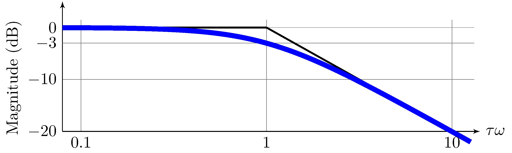
First-order real poles and zeros
Transfer-function
\[\begin{align*} G(s) &= (1 + s \, \tau)^k \end{align*}\]
Magnitude
\[\begin{align*} 20 \log_{10} | G(j \omega) | &= 20 \, k \log_{10} |1 + j \omega \, \tau| \approx \begin{cases} 0, & |\omega| < |\tau|^{-1} \\ 20 \, k \log_{10} |\tau| + 20 \, k \log_{10} |\omega|, & |\omega| \geq |\tau|^{-1} \end{cases} \end{align*}\]
Example: simple zero (\(\tau = \pm 1\), \(k = 1\))
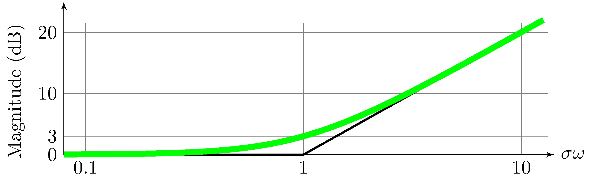
First-order real poles and zeros
Transfer-function
\[\begin{align*} G(s) &= \frac{1}{(1 + s \, \tau)^k} \end{align*}\]
Phase
\[\begin{align*} \angle G(j \omega) &= - k \, \angle (1 + j \omega \, \tau) \approx \frac{\tau}{|\tau|} \begin{cases} 0, & |\omega| < \frac{1}{10} |\tau|^{-1} \\ - \frac{k \pi}{4} \log_{10} 10 \, |\tau| \omega, & \frac{1}{10} |\tau|^{-1} \leq \omega < 10 |\tau|^{-1} \\ - \frac{k \pi}{2}, & \omega \geq 10 |\tau|^{-1} \end{cases} \end{align*}\]
Example: simple pole (\(\tau = 1\), \(k = 1\))
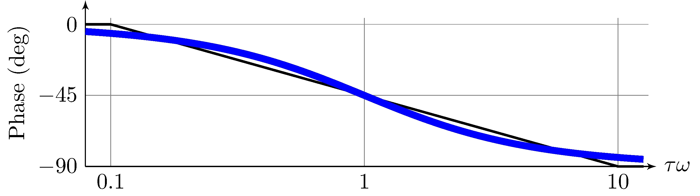
Example: simple pole (\(\tau = -1\), \(k = 1\))
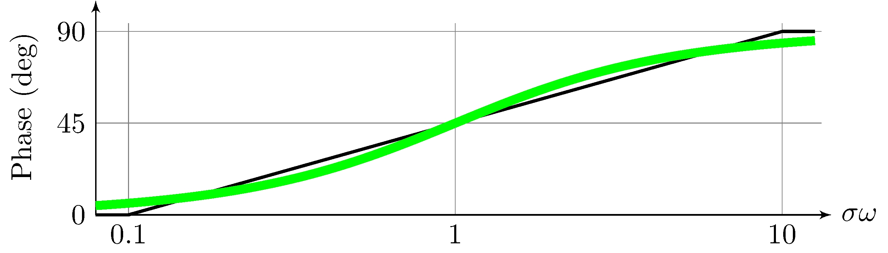
First-order real poles and zeros
Transfer-function
\[\begin{align*} G(s) &= (1 + s \, \tau)^k \end{align*}\]
Phase
\[\begin{align*} \angle G(j \omega) &= k \, \angle (1 + j \omega \, \tau) \approx \frac{\tau}{|\tau|} \begin{cases} 0, & |\omega| < \frac{1}{10} |\tau|^{-1} \\ \frac{k \pi}{4} \log_{10} 10 \, |\tau| \omega, & \frac{1}{10} |\tau|^{-1} \leq \omega < 10 |\tau|^{-1} \\ \frac{k \pi}{2}, & \omega \geq 10 |\tau|^{-1} \end{cases} \end{align*}\]
Example: simple zero (\(\tau = 1\), \(k = 1\))
Example: simple zero (\(\tau = -1\), \(k = 1\))
Second-order complex poles and zeros
Transfer-function
\[\begin{align*} G(s) &= \frac{1}{(1 + {2 \, \zeta s}/{\omega_n} + {s^2}/{\omega_n^2})^k}, & \omega_n &> 0, & |\zeta| < 1 \end{align*}\]
Magnitude
\[\begin{align*} 20 \log_{10} |G(j \omega)| &= - 20 \, k \, \log_{10} |1 - {\omega^2}/{\omega_n^2} + j {2 \, \zeta \omega}/{\omega_n}| \approx \begin{cases} 0, & |\omega| < \omega_n \\ 40 \, k \log_{10} |\omega_n| - 40 \, k \log_{10} |\omega|, & |\omega| \geq \omega_n \end{cases} \end{align*}\]
Example: complex pair of poles \((\omega_n = 1, k = 1)\)
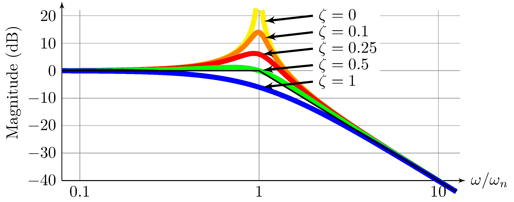
Second-order complex poles and zeros
Transfer-function
\[\begin{align*} G(s) &= \frac{1}{(1 + {2 \, \zeta s}/{\omega_n} + {s^2}/{\omega_n^2})^k}, & \omega_n &> 0, & |\zeta| < 1 \end{align*}\]
Phase
\[\begin{align*} \angle G(j \omega) &= k \, \angle 1 - {\omega^2}/{\omega_n^2} + j {2 \, \zeta \omega}/{\omega_n} \approx \frac{\zeta}{|\zeta|} \begin{cases} 0, & |\omega| < \frac{1}{10} \, \omega_n \\ - \frac{k \pi}{2} \log_{10} 10 \, {\omega}/{\omega_n} & \frac{1}{10} \, \omega_n \leq \omega < 10 \, \omega_n \\ - k \pi, & \omega \geq 10 \, \omega_n \end{cases} \end{align*}\]
Example: complex pair of poles \((\omega_n = 1, k = 1)\)
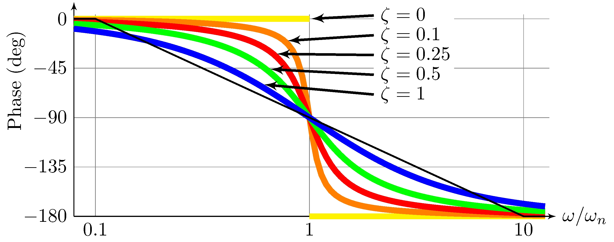
Poles and zeros at the origin
Transfer-function
\[\begin{align*} G(s) &= \frac{1}{s^k} \end{align*}\]
Magnitude
\[\begin{align*} 20 \log_{10} | G(j \omega) | &= - 20 \, k \log_{10} |\omega| \end{align*}\]
Phase
\[\begin{align*} \angle G(j \omega) &= - k \frac{\pi}{2} \end{align*}\]
Example: simple pole (\(k = 1\))
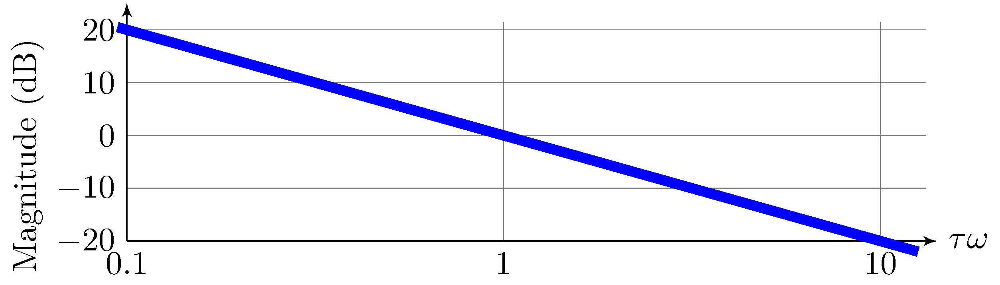
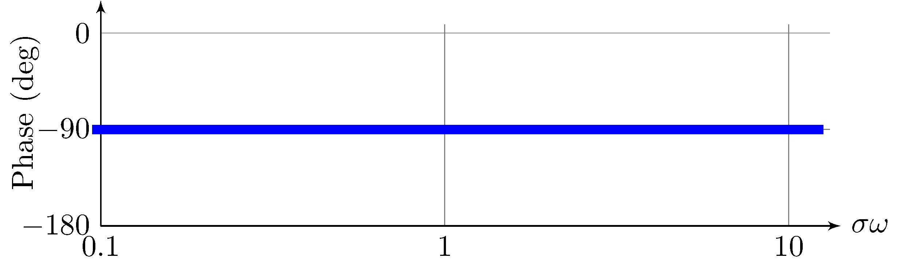
Example: \(C_\mathrm{lead}\) from Section 6.5
Transfer-function
\[\begin{align*} G(s) = C_\mathrm{lead}(s) &= 3.83 \frac{s + 7.5}{s + 21} \end{align*}\]
Normalized
\[\begin{align*} G(s) &= \tilde{\beta} \frac{1 + {s}/{7.5}}{1 + {s}/{21}}, & \tilde{\beta} &= \frac{3.83 \times 7.5}{21} \approx 1.37 \end{align*}\]
Magnitude slopes
\[\begin{align*} 0&\text{dB/decade}, & 0 \leq \omega &\leq 7.5 \\ +20&\text{dB/decade}, & 7.5 \leq \omega &\leq 21 \\ 0&\text{dB/decade}, & \omega &\geq 21 \end{align*}\]
Magnitude key points
\[\begin{align} \tag{A} 20 \log_{10} 1.37 &\approx 2.7 \text{dB}, & \omega &\leq 7.5 \\ \tag{B} 2.7 \text{dB} + 20 \log_{10} 21/7.5 &\approx 11.6 \text{dB}, & \omega &\geq 21 \end{align}\]
Example: \(C_\mathrm{lead}\) from Section 6.5
Transfer-function
\[\begin{align*} G(s) = C_\mathrm{lead}(s) &= 3.83 \frac{s + 7.5}{s + 21} \end{align*}\]
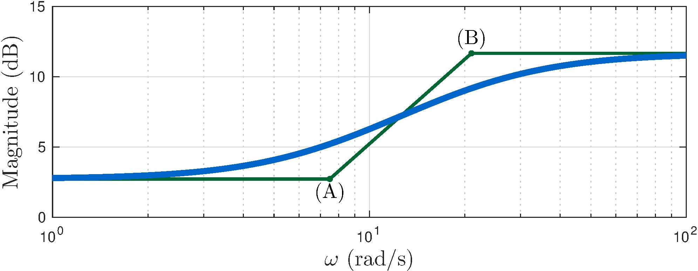
Magnitude slopes
\[\begin{align*} 0&\text{dB/decade}, & 0 \leq \omega &\leq 7.5 \\ +20&\text{dB/decade}, & 7.5 \leq \omega &\leq 21 \\ 0&\text{dB/decade}, & \omega &\geq 21 \end{align*}\]
Magnitude key points
\[\begin{align} \tag{A} 20 \log_{10} 1.37 &\approx 2.7 \text{dB}, & \omega &\leq 7.5 \\ \tag{B} 2.7 \text{dB} + 20 \log_{10} 21/7.5 &\approx 11.6 \text{dB}, & \omega &\geq 21 \end{align}\]
Example: \(C_\mathrm{lead}\) from Section 6.5
Transfer-function
\[\begin{align*} G(s) = C_\mathrm{lead}(s) &= 1.37 \frac{1 + {s}/{7.5}}{1 + {s}/{21}} \end{align*}\]
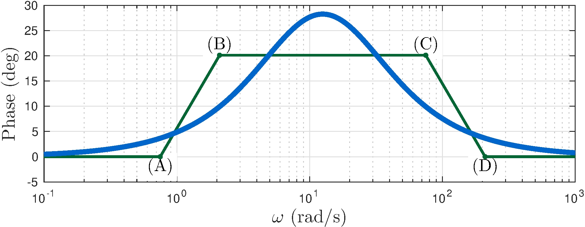
Phase slopes
\[\begin{align*} 0^\circ&\text{/decade}, & 0 \leq \omega &\leq 0.75 \\ +45^\circ&\text{/decade}, & 0.75 \leq \omega &\leq 2.1 \\ 0^\circ&\text{/decade}, & 2.1 \leq \omega &\leq 75 \\ -45^\circ&\text{/decade}, & 75 \leq \omega &\leq 210 \\ 0^\circ&\text{/decade}, & \omega &\geq 210 \end{align*}\]
Phase key points
\[\begin{align} \tag{A} &\approx 0^\circ, & \omega &= 0.75 \\ \tag{B} 45^\circ \log_{10} 2.1/0.75 &\approx 20^\circ, & \omega &=2.1, \\ \tag{C} 45^\circ \log_{10} 2.1/0.75 &\approx 20^\circ, & \omega &=75, \\ \tag{C} 0^\circ \log_{10} 2.1/0.75 &\approx 0^\circ, & \omega &=210. \end{align}\]
See book for a more challenging example
\[\begin{align*} G(s) &= \frac{28.1 s^2 + 22.4 s + 112.4}{s^6 + 5.7 s^5 + 12.81 s^4 + 47.6 s^3 + 7.5 s^2 + 11.25 s} \end{align*}\]
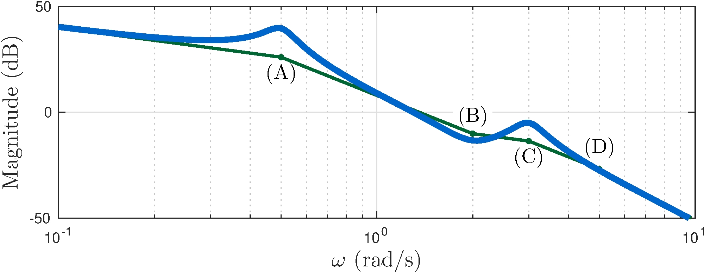
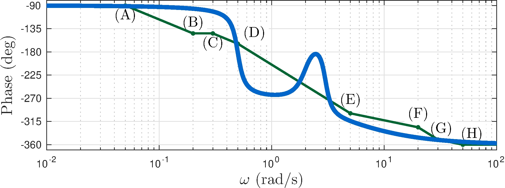
7.2 Non-Minimum-Phase Systems
A simple example
Frequency responses of \[\begin{align*} G_1 &= 1, & G_2 &= -1, & G_3 &= \frac{s - 1}{s + 1} \end{align*}\] have the exact same magnitude \[\begin{align*} |G_1(j \omega)| = |G_2(j \omega)| = |G_3(j \omega)| = 1 \end{align*}\] but different phases \[\begin{align*} \angle G_1(j \omega) &= 0, & \angle G_2(j \omega) &= \pi, & \angle G_3(j \omega) &= \pi - 2 \tan^{-1} \omega \end{align*}\] \(G_1\) is minimum phase
A more complex example
Frequency response of \[\begin{align} G_1 &= \frac{1 + s}{s^2 + s + 1}, & G_2 &= \frac{1 - s}{s^2 + s + 1}, & G_3 &= \frac{(1 - s)^2}{s^3 + 2 s^2 + 2 s + 1} \end{align}\]
Bode plots
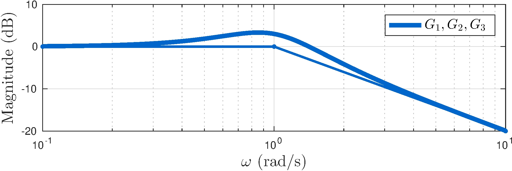
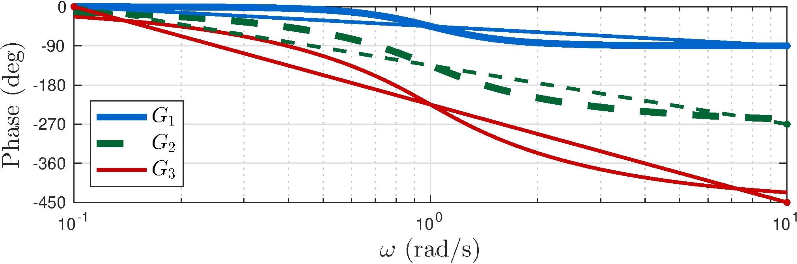
A more complex example
Frequency response of \[\begin{align} G_1 &= \frac{1 + s}{s^2 + s + 1}, & G_2 &= \frac{1 - s}{s^2 + s + 1}, & G_3 &= \frac{(1 - s)^2}{s^3 + 2 s^2 + 2 s + 1} \end{align}\] have the exact same magnitude \(|G_1(j \omega)| = |G_2(j \omega)| = |G_3(j \omega)|\)
\(G_1\) is minimum phase
Step response
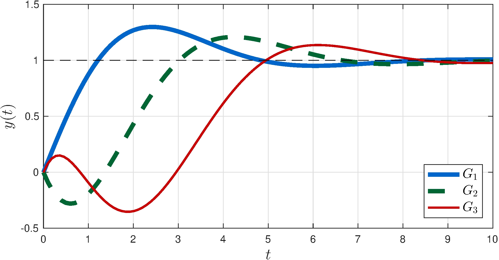
Other examples
Systems with delays
Padé approximation of order \(n\) \[\begin{align*} e^{-s \tau} &\approx \frac{1 - a_1 s + a_2 s^2 - \cdots \pm a_n s^n}{1 + a_1 s + a_2 s^2 + \cdots + a_n s^n} \end{align*}\]
Steering vehicles
Forward lane-change
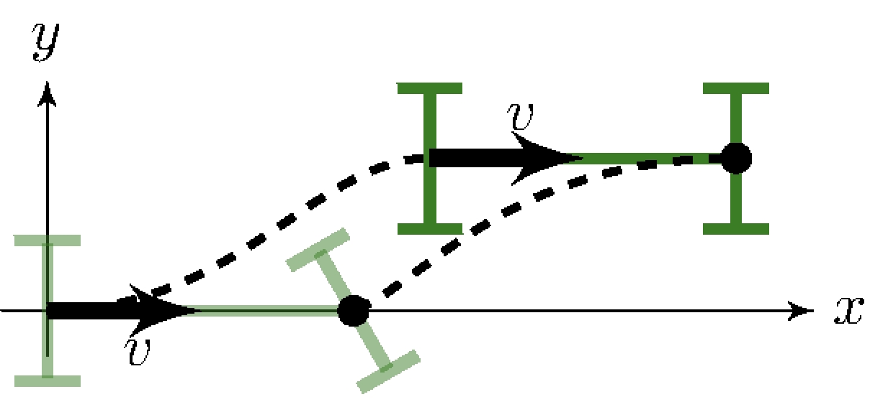
Minimum-phase
Backward lane-change
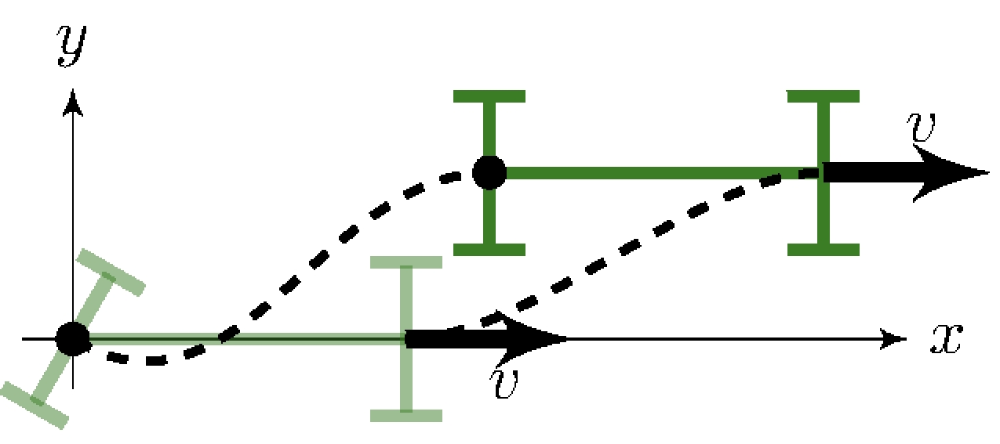
Non-minimum-phase
7.3 Polar Plots
Parametric curve
\[\begin{align*} s &= G(j \omega), & \omega \in \mathbb{R} \end{align*}\]
Image of the imaginary axis under the mapping \(G\)
Imaginary axis
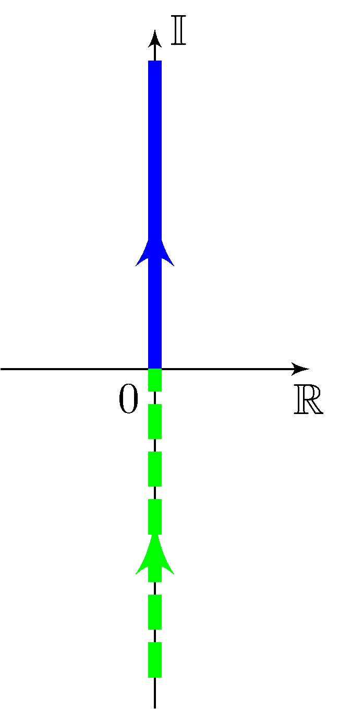
Mapping
\[\begin{align*} \\[5em] G(s) &= \frac{1}{s + 1} \end{align*}\]
Image
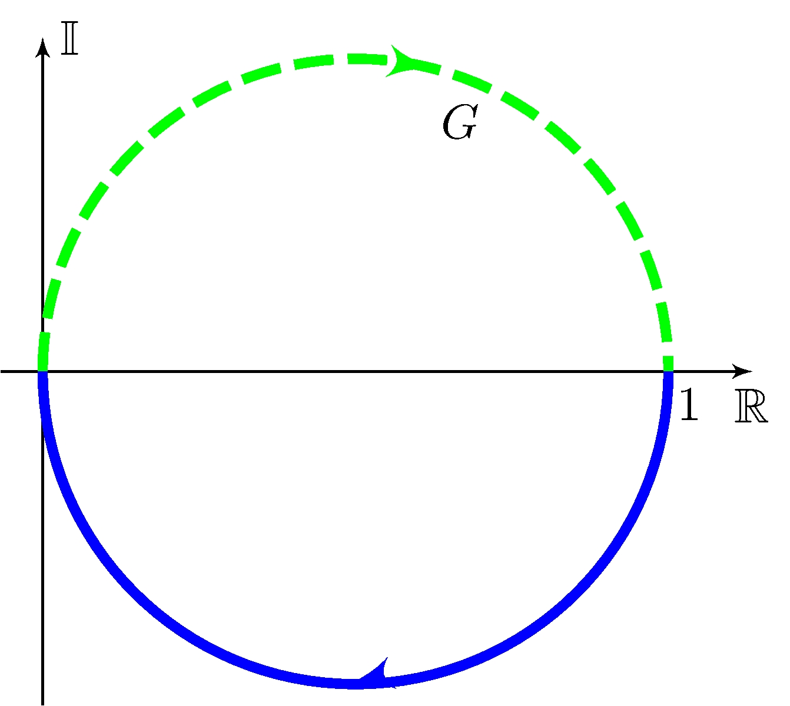
From Bode plots to polar plots
Example
\[\begin{align*} G(s) = (s + 1)^{-1} \end{align*}\]
Polar plot
\[\begin{align*} G(j \omega) &= \frac{1}{j \omega + 1} = \frac{1}{2} + \frac{1}{2} \frac{1 - j \omega }{1 + j \omega} = \frac{1}{2} + \frac{1}{2} e^{j \theta}, & -\pi &< \theta = - 2 \tan^{-1} \omega < \pi \end{align*}\]
Bode plots
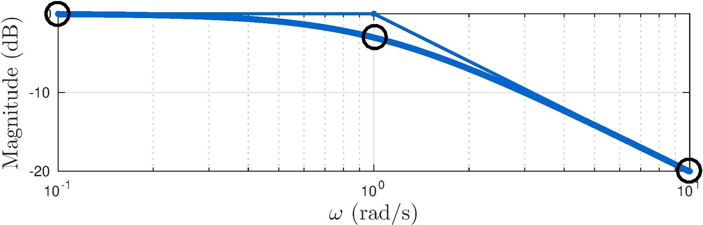
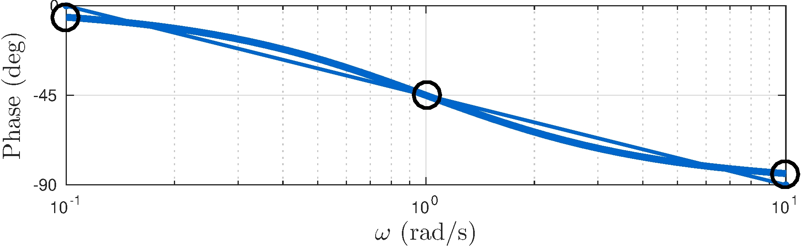
Polar plot
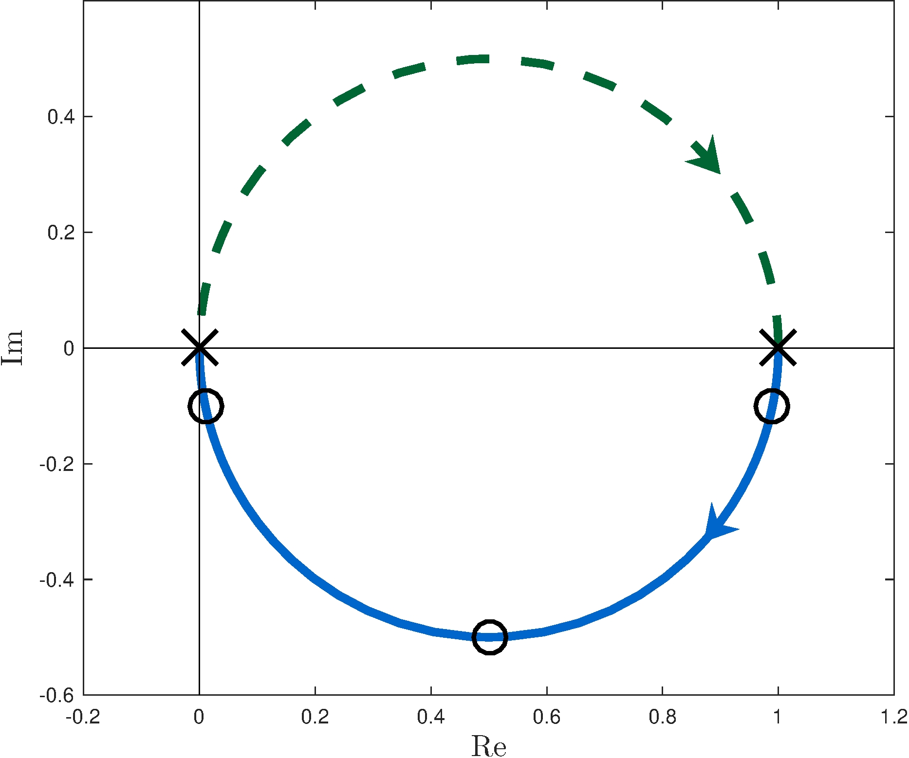
7.4 The Argument Principle
Total argument variaion
\(\Delta^0_C \arg G(s)\): total argument variation of the image of \(C\) under \(G\) about the origin
Contours
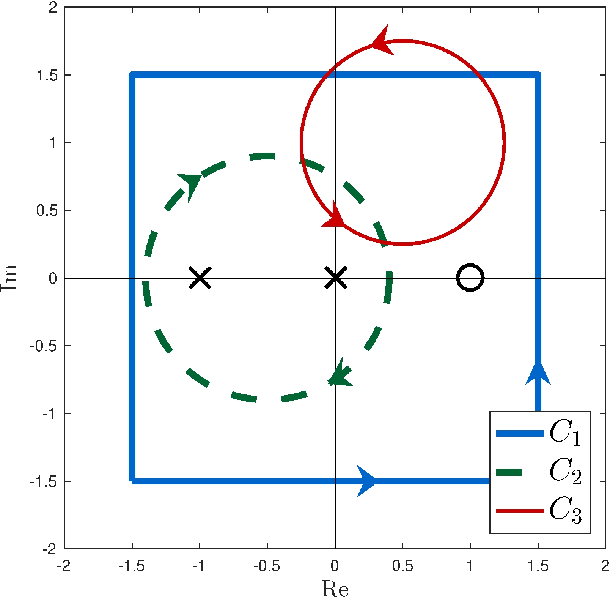
Images
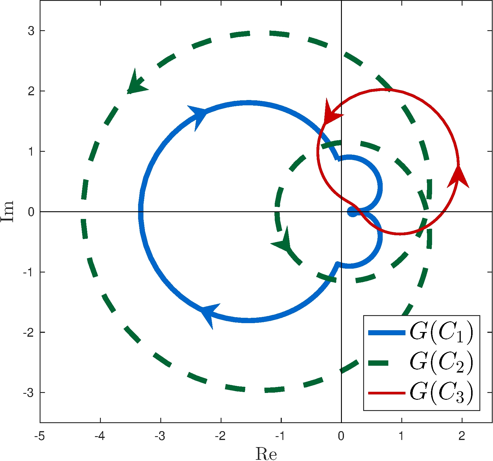
Total argument
\[\begin{align*} \frac{1}{2 \pi} \Delta^0_{C_1} \arg G(s) &= -1 \\ \frac{1}{2 \pi} \Delta^0_{C_2} \arg G(s) &= 2 \\ \frac{1}{2 \pi} \Delta^0_{C_3} \arg G(s) &= 0 \end{align*}\]
The Argument Principle
Theorem 7.1
\[\begin{align} \frac{1}{2 \pi} \Delta^0_C \arg f(s) = \frac{1}{2 \pi j} \int_{C} \frac{f'(s)}{f(s)} \, ds = Z_C - P_C \end{align}\]
\(Z_C\) is the number of zeros inside \(C\)
\(P_C\) is the number of poles inside \(C\)
Assumptions
\(C\) is a positively oriented simple closed contour
\(f\) has no zeros on \(C\)
\(f\) is analytic inside and on \(C\) except at a finite number of poles inside \(C\)
If countour is negatively oriented
\[\begin{align} \frac{1}{2 \pi} \Delta^0_C \arg f(s) = - \frac{1}{2 \pi} \Delta^0_{-C} \arg f(s) = P_C - Z_C \end{align}\]
Contours
Images
Poles and zeros
\[\begin{align*} Z_{C_1} &= 1, & P_{C_1} &= 2 \\ Z_{C_2} &= 0, & P_{C_2} &= 2 \\ Z_{C_3} &= 0, & P_{C_3} &= 0 \end{align*}\]
Total argument
\[\begin{align*} ({1}/{2 \pi}) \Delta^0_{C_1} \arg G(s) &= Z_{C_1} - P_{C_1} = -1 \\ ({1}/{2 \pi}) \Delta^0_{C_2} \arg G(s) &= P_{C_2} - Z_{C_2} = 2 \\ ({1}/{2 \pi}) \Delta^0_{C_3} \arg G(s) &= Z_{C_3} - P_{C_3} = 0 \end{align*}\]
Application
Testing for asymptotic stability
7.5 Stability in the Frequency Domain
Basic idea
\[\begin{align*} P_{\Gamma} &= Z_{\Gamma} + \frac{1}{2 \pi} \Delta^0_{\Gamma} \arg G(s) \end{align*}\]
Contour \(\Gamma\)
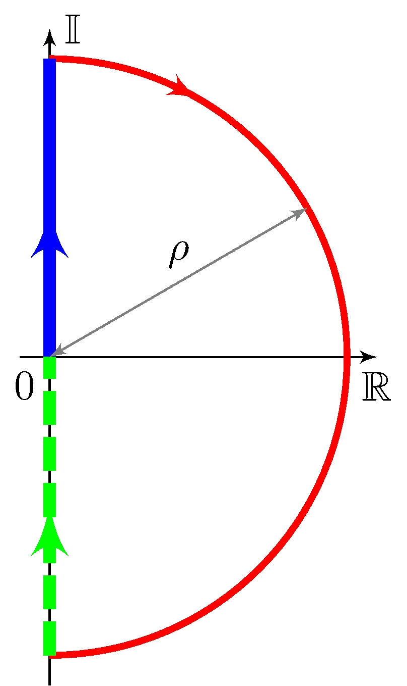
Polar plot
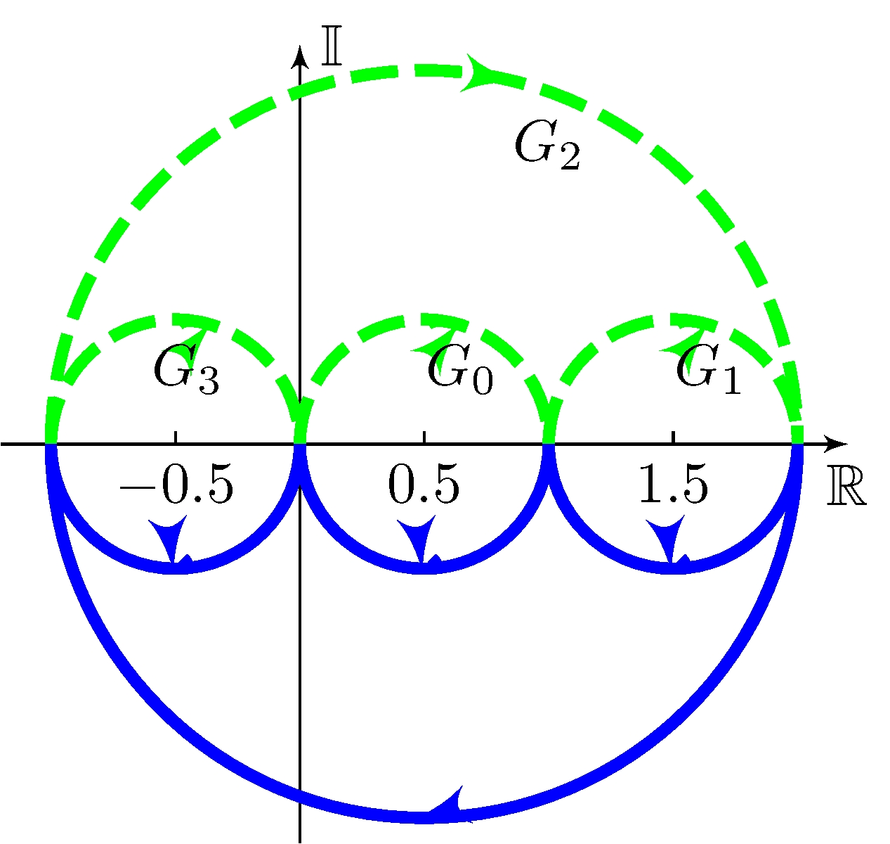
Transfer-functions
\[\begin{align*} G_0(s) &= \frac{1}{s + 1} \\ G_1(s) &= \frac{s + 2}{s + 1} = 1 + G_0(s) \\ G_2(s) &= \frac{2 - s}{s + 1} = 3 \, G_0(s) - 1 \\ G_3(s) &= \frac{-s}{s + 1} = G_0(s) - 1 \\ \end{align*}\]
\[\begin{align*} {Z_\Gamma}_i &= 0, & (2 \pi)^{-1} \Delta^0_{\Gamma} \arg G_i(s) &= 0, & {P_\Gamma}_i &= 0 + 0 = 0, & i &= \{ 0, 1, 3 \} \\ {Z_\Gamma}_2 &= 1, & (2 \pi)^{-1} \Delta^0_{\Gamma} \arg G_2(s) &= -1, & {P_\Gamma}_2 &= 1 - 1 = 0 \end{align*}\]
Features
Attention near the origin if \(G\) is strictly proper
Can be used even if \(G\) is not rational, e.g. \(G(s) = {(s + 1)}/{(s + 1 + e^{-s})}\)
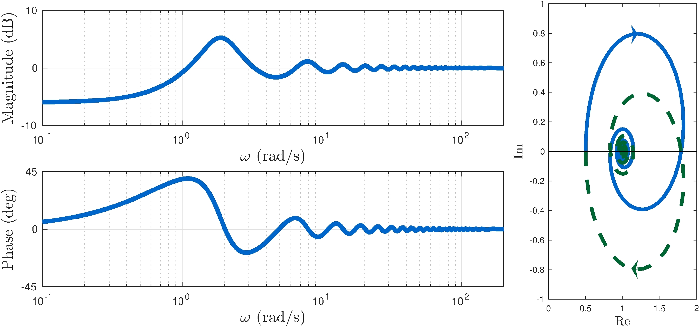
More impressive application
Closed-loop stability analysis: the Nyquist stability criterion
7.6 Nyquist Stability Criterion
Basic idea

Closed loop poles are the zeros of the characteristic equation \[\begin{align*} 1 + \alpha L(s) &= 0, & \alpha > 0 \end{align*}\] which are the same as the zeros of \[\begin{align*} L_\alpha(s) &= \frac{1}{\alpha} + L(s), & \alpha > 0 \end{align*}\] Image of \(\Gamma\) under \(L_\alpha(s)\) is the same as image of \(\Gamma\) under \(L(s)\) shifted by \(\frac{1}{\alpha}\)
Example #1
Transfer-function
\[\begin{align*} L(s) &= \frac{s - 0.5}{s^4 + 2.5 s^3 + 3 s^2 + 2.5 s + 1}, & L_\alpha(s) &= \frac{1}{\alpha} + L(s) \end{align*}\]
Image of \(\Gamma\) under \(L\)
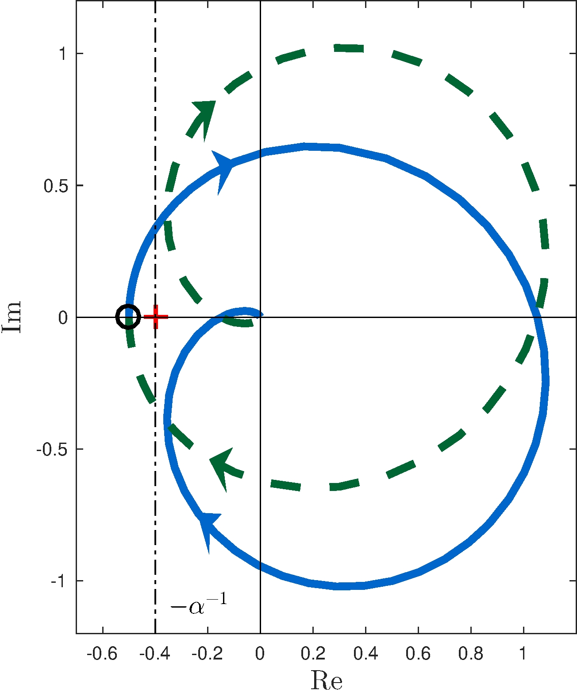
Image of \(\Gamma\) under \(L_\alpha\), \(\alpha = 2.5\)
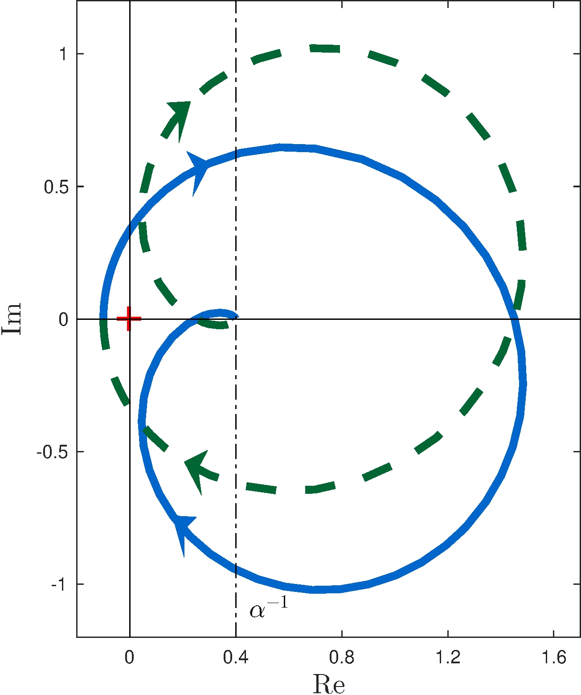
Basic idea
Image of \(\Gamma\) under \(L_\alpha(s)\) is the same as image of \(\Gamma\) under \(L(s)\) shifted by \(\frac{1}{\alpha}\)
Total argument variation are the same if we shift the origin \[\begin{align*} \frac{1}{2 \pi} \Delta^0_{\Gamma} \arg L_\alpha(s) = \frac{1}{2 \pi} \Delta^{-{1}/{\alpha}}_{\Gamma} \arg L(s) = P_\Gamma - Z_\Gamma \end{align*}\]
Theorem 7.2 (Nyquist)
Closed-loop asymptotic stability if and only if \[\begin{align*} Z_\Gamma = P_\Gamma - \frac{1}{2 \pi} \Delta^{-1/\alpha}_{\Gamma} \arg L(s) = 0 \end{align*}\]
\(P_\Gamma\): # of poles of \(L(s)\) in \(\Gamma\) (unstable open-loop poles)
\(Z_\Gamma\): # of poles of \(1 + \alpha L(s)\) in \(\Gamma\) (unstable closed-loop poles)
Example #1
Transfer-function
\[\begin{align*} L(s) &= \frac{s - 0.5}{s^4 + 2.5 s^3 + 3 s^2 + 2.5 s + 1} \end{align*}\]
Image of \(\Gamma\) under \(L\)
Encirclements of \(-1/\alpha = -0.4\)
\[\begin{align*} \frac{1}{2 \pi} \Delta^{-0.4}_{\Gamma} \arg L_\alpha(s) = -1 \end{align*}\]
Closed-loop asymptotic stablity? NO
\[\begin{align*} Z_\Gamma = P_\Gamma - \frac{1}{2 \pi} \Delta^0_{\Gamma} \arg L_\alpha(s) = 0 - (-1) = 1 \end{align*}\] closed-loop poles in \(\Gamma\)
What if \(-\alpha^{-1} < -0.5\)
?
Or if \(-0.1 < -\alpha^{-1} < 0\)
?
Example #1
Transfer-function
\[\begin{align*} L(s) &= \frac{s - 0.5}{s^4 + 2.5 s^3 + 3 s^2 + 2.5 s + 1} \end{align*}\]
Root-locus
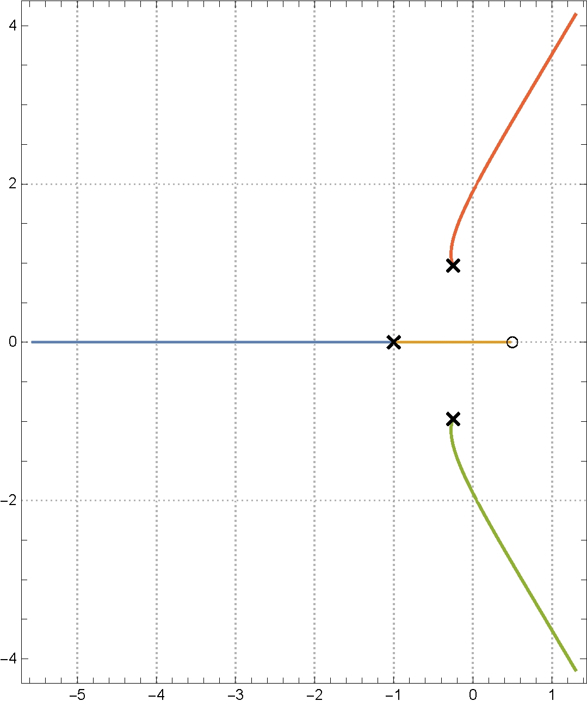
Example #2
Transfer-functions
\[\begin{align*} L_0(s) &= \frac{1}{s + 1}, & L_1(s) &= \frac{s + 2}{s + 1}, & L_2(s) &= \frac{2 - s}{s + 1}, & L_3(s) &= \frac{-s}{s + 1} \end{align*}\]
Nyquist plot
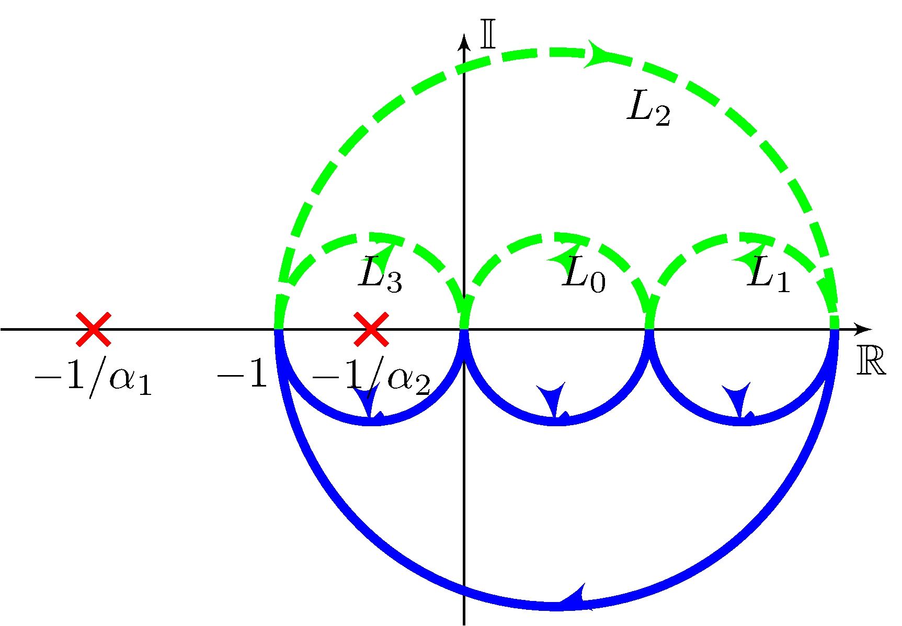
Closed-loop stability
\(P_\Gamma = 0\)
\(L_0\) and \(L_1\) \[\begin{align*} \frac{1}{2 \pi} \Delta^{-1/\alpha}_{\Gamma} \arg L_\alpha(s) &= 0 & & \implies & Z_\Gamma &= 0 \end{align*}\] stable for all \(\alpha > 0\)
Example #2
Transfer-functions
\[\begin{align*} L_0(s) &= \frac{1}{s + 1}, & L_1(s) &= \frac{s + 2}{s + 1}, & L_2(s) &= \frac{2 - s}{s + 1}, & L_3(s) &= \frac{-s}{s + 1} \end{align*}\]
Nyquist plot
Closed-loop stability
\(P_\Gamma = 0\)
\(L_0\) and \(L_1\) stable for all \(\alpha > 0\)
\(L_2\) and \(L_3\) \[\begin{align*} \frac{1}{2 \pi} \Delta^{-1/\alpha_1}_{\Gamma} \arg L_\alpha(s) &= 0 & & \implies & Z_\Gamma &= 0 \\ \frac{1}{2 \pi} \Delta^{-1/\alpha_2}_{\Gamma} \arg L_\alpha(s) &= -1 & & \implies & Z_\Gamma &= 1 \end{align*}\] stable for all \(\alpha = \alpha_1\), unstable for all \(\alpha = \alpha_2\)
Nyquist Stability Criterion
Theorem 7.2 (Nyquist)
Closed-loop asymptotic stability if and only if \[\begin{align*} Z_\Gamma = P_\Gamma - \frac{1}{2 \pi} \Delta^{-1/\alpha}_{\Gamma} \arg L(s) = 0 \end{align*}\]
\(P_\Gamma\): # of poles of \(G\) in \(\Gamma\) (unstable open-loop poles)
\(Z_\Gamma\): # of poles of \(1 + \alpha L(s)\) in \(\Gamma\) (unstable closed-loop poles)
Poles on the imaginary axis can be dealt with identations
Nyquist Stability Criterion
Indented \(\Gamma\) countour
\[\begin{align*} L(s) &= \frac{F(s)}{(s - j \omega_0)^n}, \qquad F(j \omega_0) \neq 0 \end{align*}\]
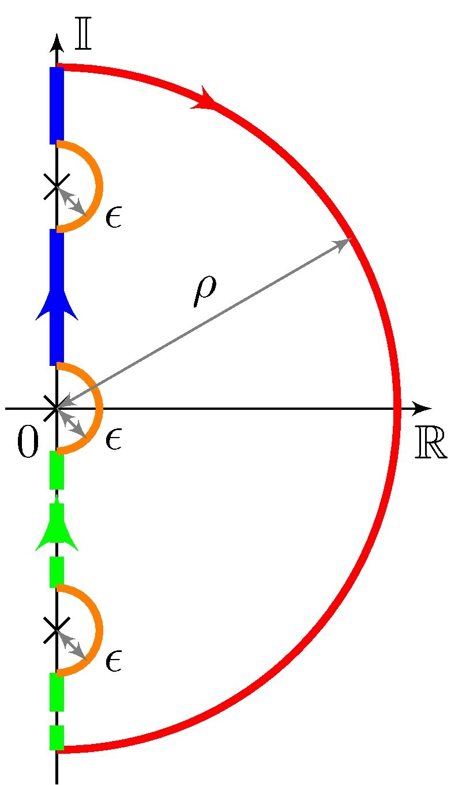
Magnitude
\[\begin{align*} | L(j \omega_0 + \epsilon \, e^{j \theta}) | &\approx \epsilon^{-n} \, | F(j \omega_0) | \rightarrow \infty, & \epsilon &\approx 0 \end{align*}\]
Phase
\[\begin{align*} \angle L(j \omega_0 + \epsilon \, e^{j \theta}) | &\approx \angle F(j \omega_0) - n \, \theta, & -\frac{\pi}{2} &\leq \theta \leq \frac{\pi}{2}, & \epsilon &\approx 0 \end{align*}\]
Example #3
Transfer-function
\[\begin{align} L(s) &= \frac{1}{4} \frac{1}{s(s^2 + {s}/{2} + 1)}, & & \text{stable for } \alpha = 1 \end{align}\]
Bode plots
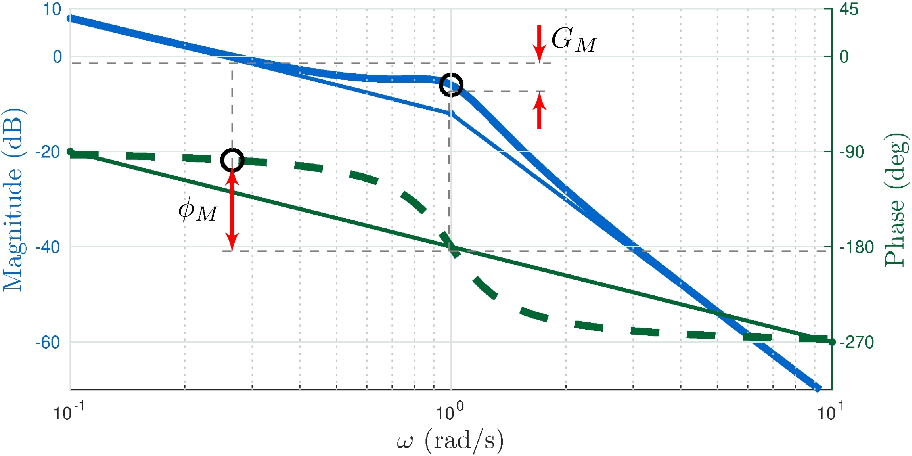
Nyquist plot
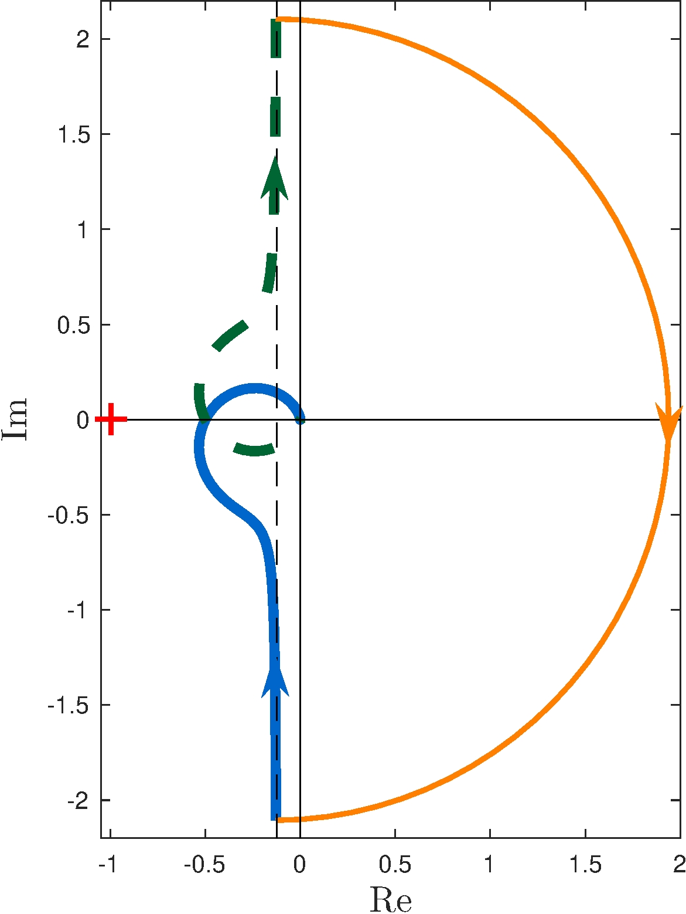
7.7 Stability Margins
Gain margin
\[\begin{align} G_M &= |L(j \omega_G)|^{-1}, & \text{for } \omega_G &\text{ s.t. } \angle L(j \omega_G) = \pi \end{align}\]
Bode plots
Nyquist plot
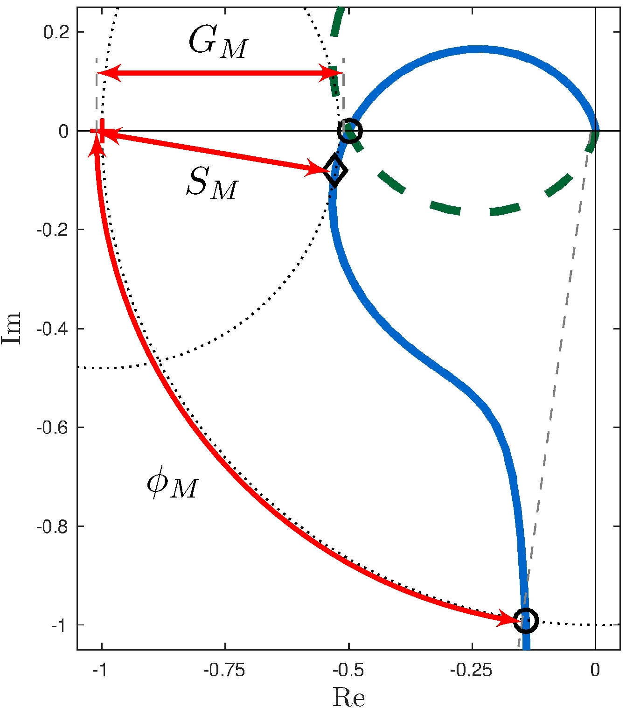
Phase margin
\[\begin{align} \phi_M &= \angle L(j \omega_\phi) - \pi, & \text{for } \omega_\phi &\text{ s.t. } | L(j \omega_\phi) | = 1 \end{align}\]
Bode plots
Nyquist plot
Stability margin
\[\begin{align} S_M &= \inf_\omega |L(j \omega) - (-1)| = \frac{1}{\sup_{\omega}|S(j \omega)|} = \| S \|_\infty^{-1} \end{align}\]
Bode plots
Nyquist plot
7.8 Control of the Simple Pendulum - Part II

Data
\[\begin{align*} m &= 0.5 \text{kg}, & \ell &= 0.3 \text{m}, & r &= \ell/2 = 0.15 \text{m}, \\ b &= 0 \text{kg/s}, & g &= 9.8 \text{m/s}^2, & J &= 3.75 \times 10^{-3} \text{kg m}^2, & J_r &= J + m r^2. \end{align*}\]
Linearized models
\[\begin{align*} G_0(s) &= \frac{1/J_r}{s^2 + (b/J_r) s + m g r/J_r} \approx \frac{66.7}{s^2 + 49}, & G_\pi(s) &= \frac{1/J_r}{s^2 +(b/J_r) s - m g r/J_r} \approx \frac{66.7}{s^2 - 49} \end{align*}\]
Goal
Design a controller with integral action
Control of the Simple Pendulum - Part II
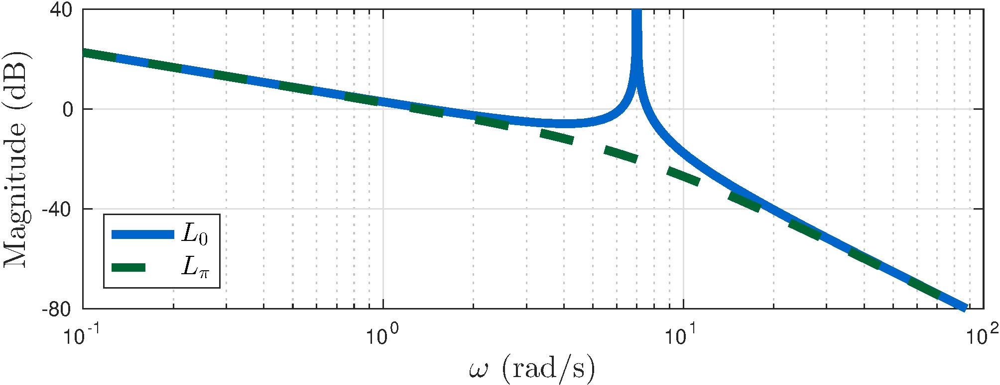
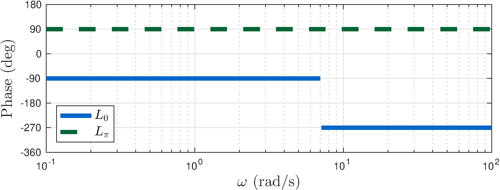
Nyquist analysis
\[\begin{align*} L_\pi &= \frac{G_\pi}{s} \approx \frac{-1.36}{s \, (1 + {s}/{7})(1 - {s}/{7})} \\ Z_\Gamma &= P_\Gamma - \frac{1}{2 \pi} \Delta_\Gamma^{-1} \arg L_\pi(s) \\ &= 1 - (-1) = 2 \end{align*}\]
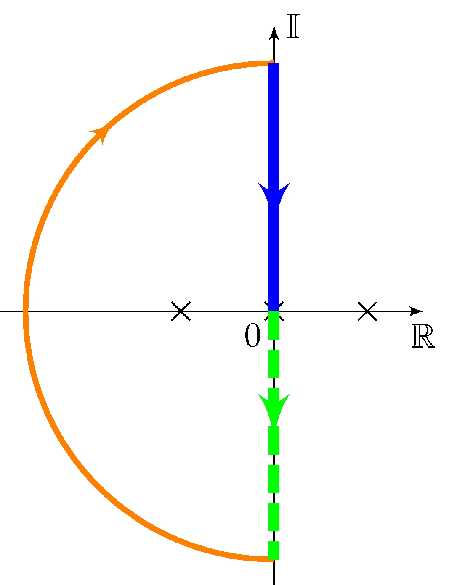
Control of the Simple Pendulum - Part II
Stability analysis
Because \(P_\Gamma = 1\), \(L_\pi(j \omega)\) needs
- one counter-clockwise encirclement
- to cross negative real axis
- magnitude greater than one
Counter-clockwise encirclement requires more than \(90^\circ\) phase to be added to \(L_\pi(j\omega)\). Controller must have
- at least two stable zeros
- at least one pole for realizability
(in addition to the integrator)
Control of the Simple Pendulum - Part II
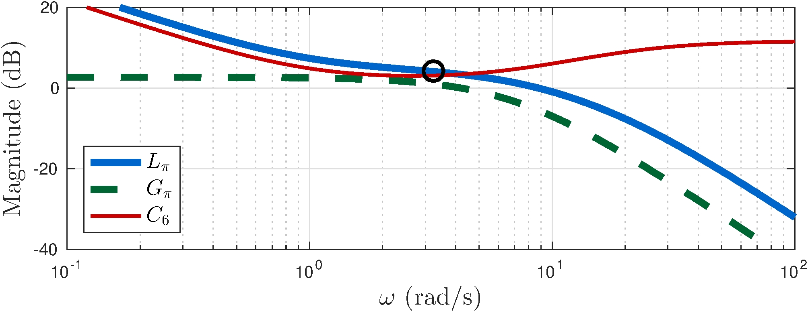
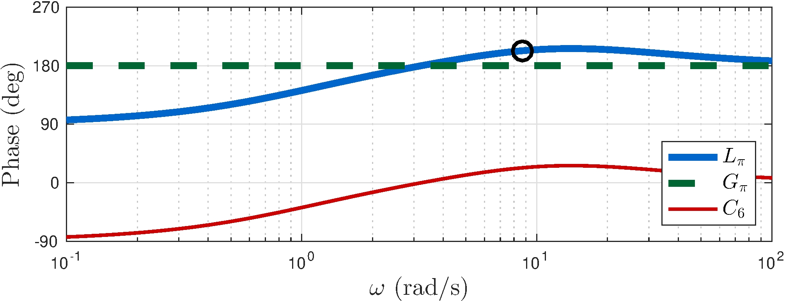
Controller candidate
\[\begin{align*} C(s) &= K \frac{(s+z_1)(s+z_2)}{s \, (s+p_1)} \end{align*}\]
with
\[\begin{align} p_1 > z_2 \geq z_1 \end{align}\]
From \(C_6\)
\[\begin{align*} p_1 &= 21, & K &= 3.83 \\ z_2 &= 6.86, & z_1 &= 0.96 \end{align*}\]
Margins
\[\begin{align*} G_M &\approx 0.63 \approx -4 \text{dB}, & \phi_M &\approx 23^\circ \\ S_M &= 0.40 \end{align*}\]
Control of the Simple Pendulum - Part II
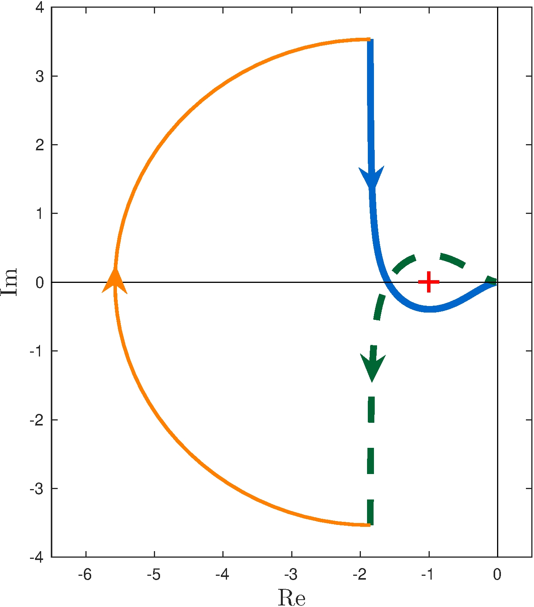
Controller candidate
\[\begin{align*} C(s) &= K \frac{(s+z_1)(s+z_2)}{s \, (s+p_1)} \end{align*}\]
with
\[\begin{align} p_1 > z_2 \geq z_1 \end{align}\]
From \(C_6\)
\[\begin{align*} p_1 &= 21, & K &= 3.83 \\ z_2 &= 6.86, & z_1 &= 0.96 \end{align*}\]
Margins
\[\begin{align*} G_M &\approx 0.63 \approx -4 \text{dB}, & \phi_M &\approx 23^\circ \\ S_M &= 0.40 \end{align*}\]
Control of the Simple Pendulum - Part II
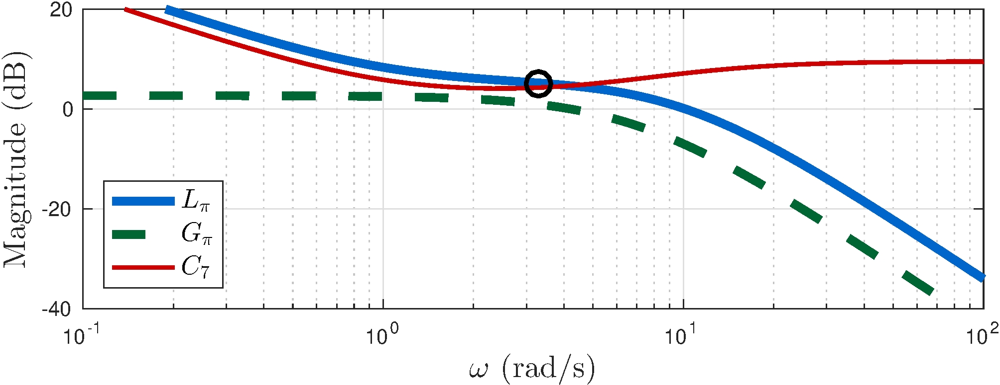
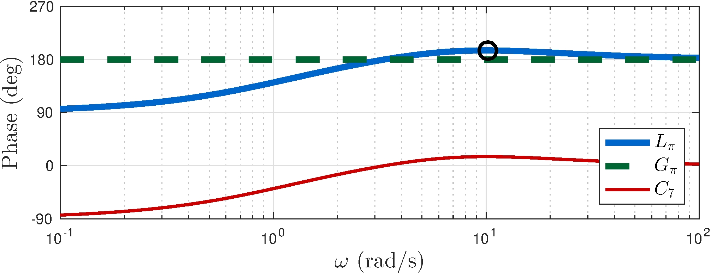
Controller candidate
\[\begin{align*} C(s) &= K \frac{(s+z_1)(s+z_2)}{s \, (s+p_1)} \end{align*}\]
with
\[\begin{align} p_1 > z_2 \geq z_1 \end{align}\]
From \(C_7\)
\[\begin{align*} p_1 &= 11, & K &= 3 \\ z_2 &= 5, & z_1 &= 1 \end{align*}\]
Margins
\[\begin{align*} G_M &\approx 0.55 \approx -5.2 \text{dB}, & \phi_M &\approx 15^\circ \\ S_M &= 0.27 \end{align*}\]
Control of the Simple Pendulum - Part II
Controller \(C_6\)
\[\begin{align*} C_6(s) &= 3.83 \frac{(s+0.96)(s+6.86)}{s \, (s+21)} \end{align*}\]
Controller \(C_7\)
\[\begin{align*} C_7(s) &= 3 \frac{(s+1)(s+5)}{s \, (s+11)} \end{align*}\]
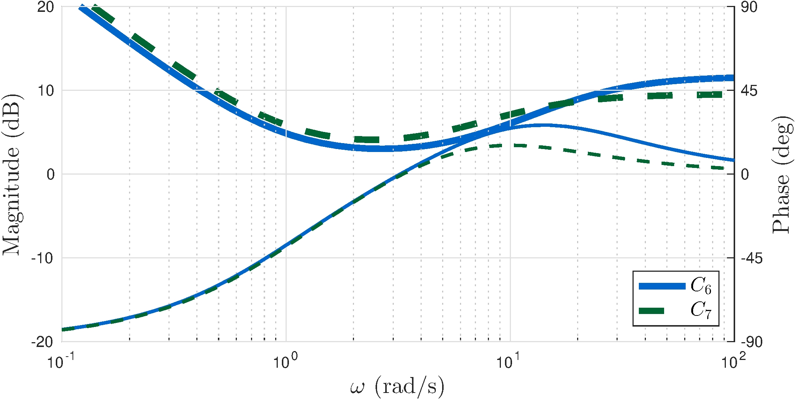
Control of the Simple Pendulum - Part II
Nyquist analysis
\[\begin{align*} L_0 &= \frac{G_0}{s} \approx \frac{1.36}{s \, (1 + j{s}/{7})(1 - j{s}/{7})} \\ Z_\Gamma &= P_\Gamma - \frac{1}{2 \pi} \Delta_\Gamma^{-1} \arg L_\pi(s) \\ &= 0 - (-2) = 2 \end{align*}\]
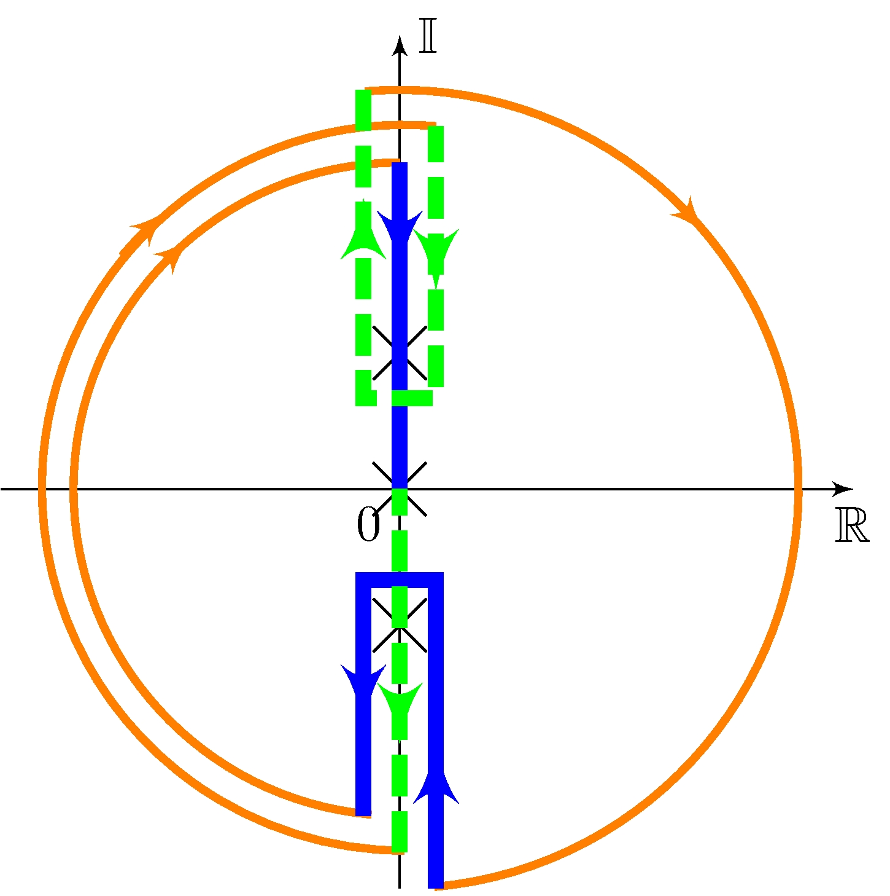
Control of the Simple Pendulum - Part II
Stability analysis
Because \(P_\Gamma = 0\), \(L_0(j \omega)\) needs
- no encirclements
- to not cross negative real axis
If more than \(90^\circ\) phase is added to \(L_0(j\omega)\) there will be no crossing of the negative real axis nor encirclements. Controller must have
- at least two stable zeros
- at least one pole for realizability
(in addition to the integrator)
Same specs as for \(L_\pi\)!
Control of the Simple Pendulum - Part II
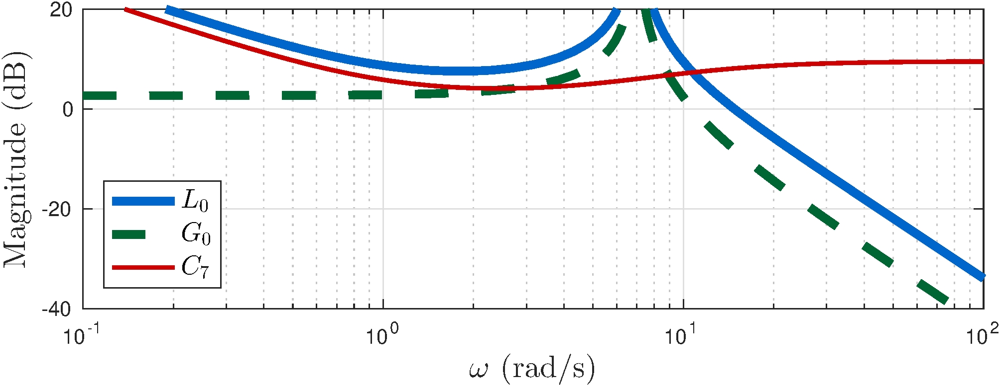
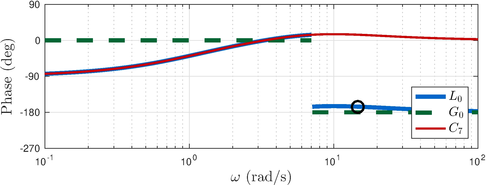
Controller \(C_7\)
\[\begin{align*} C_7(s) &= 3 \frac{(s+1)(s+5)}{s \, (s+11)} \end{align*}\]
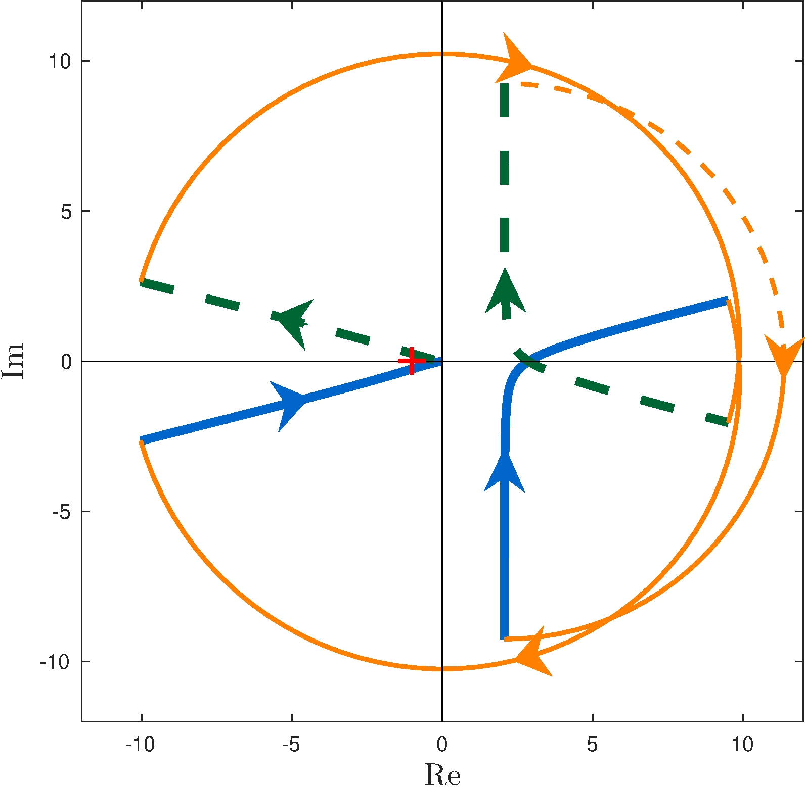